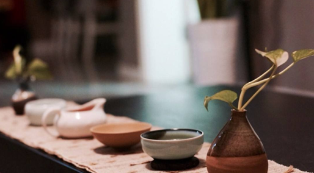

 茶道起源于中国。中国人至少在唐或唐以前，就在世界上首先将茶饮作为一种修身养性之道，唐朝《封氏闻见记》中就有这样的记载：“茶道大行，王公朝士无不饮者。”（意思就是：喝茶，饮茶等茶道被广泛的推行，风靡一时，王公贵族朝臣没有不喝茶的人。）这是现存文献中对茶道的最早记载。由此可见，最早最完善的茶道流程就是唐代陆羽所创的煎茶茶道。吕温在《三月三茶宴序》中对茶宴的优雅气氛和品茶的美妙韵味，作了非常生动的描绘。
在唐宋年间人们对饮茶的环境、礼节、操作方式等饮茶仪程都已很讲究，有了一些约定俗成的规矩和仪式，茶宴已有宫庭茶宴、寺院茶宴、文人茶宴之分。对茶饮在修身养性中的作用也有了相当深刻的认识。
宋徽宗赵佶是一个茶饮的爱好者，他认为茶的芬芳品味，能使人闲和宁静、趣味无穷：“至若茶之为物，擅瓯闽之秀气，钟山川之灵禀，祛襟涤滞，致清导和，则非庸人孺子可得而知矣；冲淡简洁，韵高致静……”
南宋绍熙二年（公元1191年）日本僧人荣西将茶种从中国带回日本，从此日本才开始遍种茶叶。在南宋末期（公元1259年）日本南浦昭明禅师来到我国浙江省余杭县的径山寺取经，交流了该寺院的茶宴仪程，首次将中国的茶道引进日本，成为中国茶道在日本的最早传播者。日本《类聚名物考》对此有明确记载：“茶道之起，在正元中筑前崇福寺开山南浦昭明由宋传入。”日本《本朝高僧传》也有：“南浦昭明由宋归国，把茶台子、茶道具一式带到崇福寺"的记述。
直到日本丰臣秀吉时代（公元1536～1598年，相当于我国明朝中后期）千利休成为日本茶道高僧后，才高高举起了“茶道”这面旗帜，并根据《诗经》总结出茶道四规：“和、敬、清、寂”，显然这个基本理论是受到了中国茶道精髓的影响而形成的，其主要的仪程框架规范仍源于中国。
中国的茶道出现很早，但遗憾的是中国虽然很早提出了“茶道”的概念，也在该领域中不断实践探索，却没有能够旗帜鲜明地以“茶道”的名义来发展这项事业，也没有规范出具有传统意义的茶道礼仪。中国的茶道可以说是重精神而轻形式。有学者认为必要的仪式对“茶道”的旗帜来说是较为重要的，没有仪式光自称有“茶道”，虽然也不能说不可以，搞得有茶就可以称道，那似乎就泛化了，最终也“道可道，非常道”了。
泡茶本是一件很简单的事情，简单得来只要两个动作就可以了：放茶叶、倒水。但是在茶道中，那一套仪式又过于复杂或是过于讲究了，一般的老百姓肯定不会把日常的这件小事搞得如此复杂。
事实上中国茶道并没有仅仅满足于以茶修身养性的发明和仪式的规范，而是更加大胆地去探索茶饮对人类健康的真谛，创造性地将茶与中药等多种天然原料有机地结合，使茶饮在医疗保健中的作用得以大大地增强，并使之获得了一个更大的发展空间，这就是中国茶道最具实际价值的方面，也是千百年来一直受到人们重视和喜爱的魅力所在。
唐代的饮茶方式和唐代的茶汤与我们现在的概念完全不同。唐代饮茶，是将茶饼切碎碾成粉末，过“罗” （“罗”，就是筛子。“茶罗”是一种专门用来筛茶粉的茶具）后加入沸水中煮成糊状，同时还要往里加盐、葱、姜、桔皮、薄荷等，类似于一种可怕的“胡辣汤”。也难怪这种彻底怪味、想象起来都让人觉得不堪下咽的“茶汤”能提神，能让人喝了不打瞌睡。